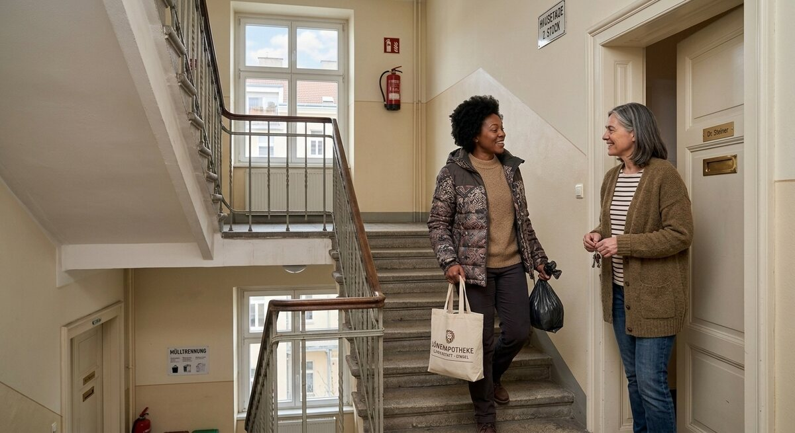

Teil 2 · Bild und Erfahrung
Karte 022
Begegnung im Treppenhaus
Ausführliches Übungsmaterial zur Vorder- und Rückseite der Karte.

Ihre Aufgabe
- wer auf dem Bild ist
- wo die Situation stattfindet
- was die Personen vielleicht sagen
- warum Nachbarschaft wichtig ist
- wie Ihr Kontakt zu Nachbarn ist
Interaktives Sprechtraining
Mit ChatGPT sprechen üben
Öffne ChatGPT, starte dort zuerst den Sprachmodus (Voice Mode) und füge anschließend den kopierten Übungsprompt in diesen Chat ein.
- Tippe auf den Button. Der Übungsprompt wird kopiert und ChatGPT wird geöffnet. Melde dich bei Bedarf in deinem ChatGPT-Konto an.
- Starte in ChatGPT zuerst den Sprachmodus (Voice Mode).
- Füge den bereits kopierten Prompt in den Chat des Sprachmodus (Voice Mode) ein und sende ihn ab.
- Beginne anschließend die Sprechübung.
- Wenn du die Übung beenden und Feedback bekommen möchtest, sage:
Die Übung ist beendet. Bitte gib mir jetzt Feedback.
Prompt anzeigen oder manuell kopieren
ChatGPT ist ein externer Dienst. Für den Sprachmodus (Voice Mode) musst du dich möglicherweise bei deinem ChatGPT-Konto anmelden und den Zugriff auf das Mikrofon erlauben. Verfügbare Funktionen hängen von deinem Gerät und Konto ab. Die Übung ersetzt keine offizielle Prüfungsbewertung.
Nützliche Satzanfänge
- Auf dem Bild trifft man …
- Die Szene spielt im …
- Vielleicht sprechen sie über …
- Gute Nachbarn sind wichtig, weil …
- In meiner Nachbarschaft …
Modellantwort anhören
Höre zuerst aufmerksam zu. Sprich danach nicht einfach alles nach, sondern bearbeite die Aufgabe mit eigenen Informationen.
Modellantwort
Auf dem Bild sieht man wahrscheinlich zwei Nachbarn im Treppenhaus. Eine Person trägt vielleicht eine Tasche oder einen Müllbeutel, die andere kommt gerade aus der Wohnung. Ich denke, sie grüßen sich oder sprechen kurz über ein kleines Alltagsproblem, zum Beispiel über Pakete, Ruhezeiten oder den Hausflur. Die Situation wirkt normal und freundlich.
Nachbarschaft ist im Alltag wichtig, auch wenn man nicht eng befreundet ist. Es hilft schon, wenn man sich kennt, freundlich grüßt und manchmal kleine Informationen austauscht. In meiner Nachbarschaft ist der Kontakt eher ruhig, aber positiv. Wir sprechen nicht jeden Tag lange miteinander, doch wenn jemand Hilfe braucht, ist oft jemand da. Das finde ich gut. Gerade in einem neuen Land gibt ein gutes Verhältnis zu Nachbarn ein Gefühl von Sicherheit und gehört, ja, einfach zum Ankommen dazu.
Mögliche Prüferfragen und Antwortideen
-
Kennen Sie Ihre Nachbarn gut?
Antwortidee: Einige kenne ich gut, andere nur vom Grüßen.
-
Was kann in einem Haus Probleme machen?
Antwortidee: Zum Beispiel Lärm, Müll oder Missverständnisse im Alltag.
-
Ist ein kurzer Kontakt schon wichtig?
Antwortidee: Ja, auch ein kurzer freundlicher Kontakt ist wichtig.
-
Haben Nachbarn Ihnen schon einmal geholfen?
Antwortidee: Ja, einmal hat eine Nachbarin ein Paket für mich angenommen.
Wortschatz
| Deutsch | Englisch |
|---|---|
| das Treppenhaus | stairwell |
| die Haustür | front door |
| der Hausflur | hallway |
| die Ruhezeit | quiet hours |
| das Verhältnis | relationship |
| Sicherheit geben | to provide security |
| ankommen | to settle in |
| der Nachbar | neighbor |
Schnelltraining
Formulieren Sie zwei kurze Sätze für ein Gespräch im Treppenhaus. Zum Beispiel: Begrüßen, danken oder nachfragen.